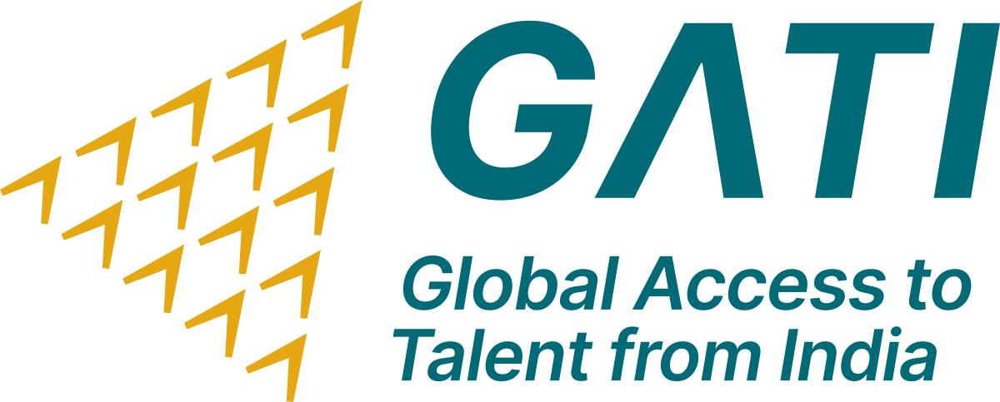

Global Skills Mobility · Demand Intelligence
Sector-level labour-market demand dashboards for GATI's skills-mobility corridors — built from live job-posting data, classified to international standards (ISCO-08, ISIC Rev.4). Choose a destination country to explore its sector dashboards.